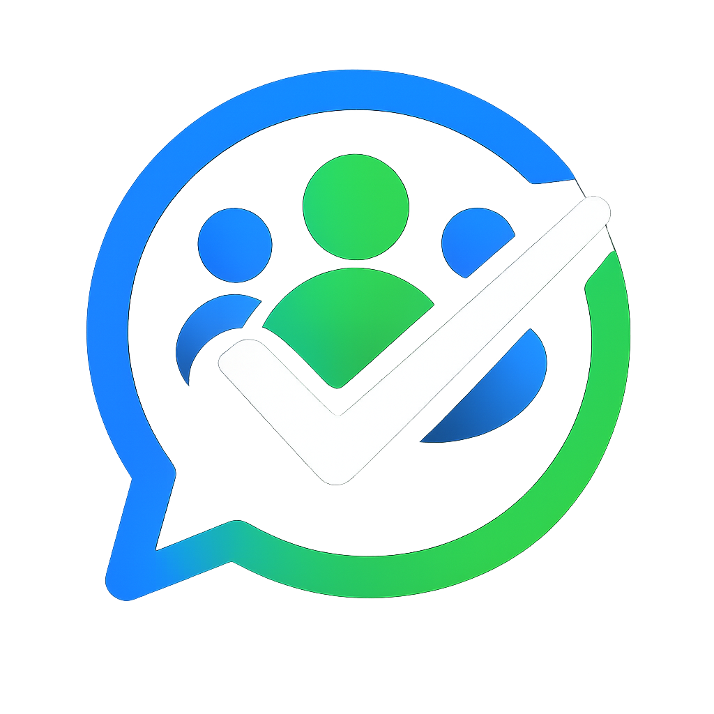

Anmelden
Passwort muss geändert werden
Standard-Login: admin / admin — beim ersten Login muss das Passwort geändert werden.
TeamPulse verbindet sich mit einer WAHA-Instanz (WhatsApp HTTP API) und versendet native WhatsApp-Umfragen in eine konfigurierte Gruppe.
Teilnehmer werden automatisch aus der WhatsApp-Gruppe synchronisiert — kein manuelles Anlegen von Kontakten nötig.
Der Dashboard-Tab ist die Startseite und zeigt alle wichtigen Infos auf einen Blick:
Bei Events mit automatischer Absage wird im Dashboard angezeigt, ob die Mindest-Zusagen erreicht sind (grün/rot).
Einmalig: Festes Datum (nur Zukunft). Umfrage wird sofort als "Ausstehend" angelegt.
Wiederkehrend: Wähle einen Wochentag — der Scheduler erstellt jede Woche automatisch eine neue Umfrage.
Uhrzeit: Wann das Event beginnt (z.B. 19:00).
Treffenszeit: Optional — wann sich das Team trifft (z.B. 18:30). Muss vor der Event-Uhrzeit liegen.
Ende: Optional — wann das Event endet (z.B. 20:30). Muss nach der Event-Uhrzeit liegen.
Umfrage senden: Entweder "X Stunden vor Event" (Standard: 24h) oder ein festes Datum+Uhrzeit. Bei wiederkehrenden Events ist nur "Stunden vorher" verfügbar.
Abstimmungsfrist: Entweder "X Stunden vor Event" (Standard: 1h) oder ein festes Datum+Uhrzeit. Bei wiederkehrenden Events ist nur "Stunden vorher" verfügbar.
Start-Erinnerung: Minuten vor Event-Beginn — Privatnachricht an alle Zusager mit dem Event-Namen. Standard: 60 Min.
Abstimmungs-Erinnerungen: Zwei Erinnerungen an Nicht-Abstimmer, konfigurierbar in Minuten vor der Frist. Standard: 120 Min (1. Erinnerung) und 15 Min (2. Erinnerung).
Beschreibung: Optionales Freitextfeld — wird in WhatsApp-Umfragen, Erinnerungen, Ergebnis-Posts, Gruppenbeschreibung und im Dashboard angezeigt.
Automatische Absage: Optional — wenn aktiviert, wird bei zu wenigen Zusagen automatisch eine Absage in die Gruppe gesendet. Mindest-Zusagen konfigurierbar.
Ausnahmen (nur wiederkehrend): Einzelne Termine können ausgesetzt werden (z.B. Feiertage). Die Umfrage wird für dieses Datum nicht erstellt/gesendet.
Jede Umfrage durchläuft vier Phasen:
Automatisches Schließen passiert, sobald die Abstimmungsfrist abläuft. Ergebnisse werden als Text + Bild-Chart in die Gruppe gepostet.
Auto-Pin: Aktive Umfragen werden automatisch in der Gruppe angepinnt und beim Schließen entpinnt. Ergebnis-Posts werden angepinnt und nach Event-Ende (end_time, sonst event_time) automatisch entpinnt.
Teilnehmer stimmen direkt in WhatsApp über die native Umfrage ab: Ja / Nein / Vielleicht.
Nach jeder Abstimmung (Ja, Nein, Vielleicht) bekommt der Voter eine private Nachricht und kann innerhalb von 5 Minuten optional einen Kommentar/Grund angeben.
Stimmänderung: Wer seine Stimme ändert, bekommt eine 🔄-Nachricht mit dem alten Kommentar und kann innerhalb von 5 Minuten einen neuen schreiben. Ohne neuen Kommentar bleibt der alte erhalten.
Ergebnisse: Alle Antworten werden mit Namen und Kommentaren/Gründen angezeigt — gruppiert nach Zusagen, Absagen, Vielleicht und Ausstehend.
Antworten werden alle 15 Sekunden automatisch aktualisiert, wenn ein Poll-Detail geöffnet ist.
Alle automatischen Nachrichten sind mit dem Hinweis "🤖 Automatisch generierte Nachricht von TeamPulse" gekennzeichnet.
Der Scheduler prüft jede Minute:
Der Statistiken-Tab zeigt pro Mitglied: Zusagen, Absagen, Vielleicht, keine Antwort und die Antwortquote in Prozent.
Nur geschlossene Umfragen fließen ein — offene oder ausstehende Umfragen zählen nicht gegen die Quote.
Im Tab Beschreibung wird die WhatsApp-Gruppenbeschreibung verwaltet. Sie wird automatisch bei jeder Änderung aktualisiert (Abstimmung, Schließung, neues Event etc.). Sobald ein Event endet (end_time) bzw. beginnt (event_time, wenn keine Endzeit gesetzt), wechselt die Beschreibung automatisch zum nächsten Event.
Aufbau:
Textblöcke: Erstelle beliebig viele Blöcke mit Position (oberhalb/unterhalb) und Reihenfolge. Niedrigere Reihenfolge = weiter oben.
Vorschau: Zeigt die aktuelle Beschreibung mit Zeichenzähler (max. 2048 Zeichen).
Voraussetzung: Der WAHA-Bot muss Gruppen-Admin sein, damit die Beschreibung aktualisiert werden kann.
WAHA_API_URL — URL der WAHA-Instanz (z.B. http://172.16.80.27:3000)
WAHA_API_KEY — API-Key für WAHA-Authentifizierung
GROUP_CHAT_ID — WhatsApp-Gruppen-ID (Format: 120363xxx@g.us)
SESSION_SECRET — Zufälliger String für Session-Verschlüsselung
DEV_MODE — Bei "true" wird der Gruppen-Tab im Footer sichtbar (zum Nachschlagen von Gruppen-IDs)
In der WAHA-Session muss ein Webhook konfiguriert sein:
URL: http://<TeamPulse-IP>:3000/api/webhooks/waha
Events: message, poll.vote
Ohne korrekten Webhook werden Abstimmungen nicht erkannt. TeamPulse lauscht auf 0.0.0.0, ist also von allen Netzwerk-Interfaces erreichbar.
Stimmen werden nicht erkannt: Prüfe ob WAHA-Webhooks korrekt konfiguriert sind. Logs: journalctl -u teampulse -f
Gruppen-ID finden: DEV_MODE=true in .env setzen, dann im Footer-Tab "Gruppen" nachschauen.
Erinnerung kam nicht: Erinnerungen werden automatisch 2x gesendet (Standard: 120 und 15 Min vor Frist). Zeitpunkte sind pro Event konfigurierbar.
Passwort vergessen: Auf dem Server mit Node.js das Passwort zurücksetzen (siehe README).